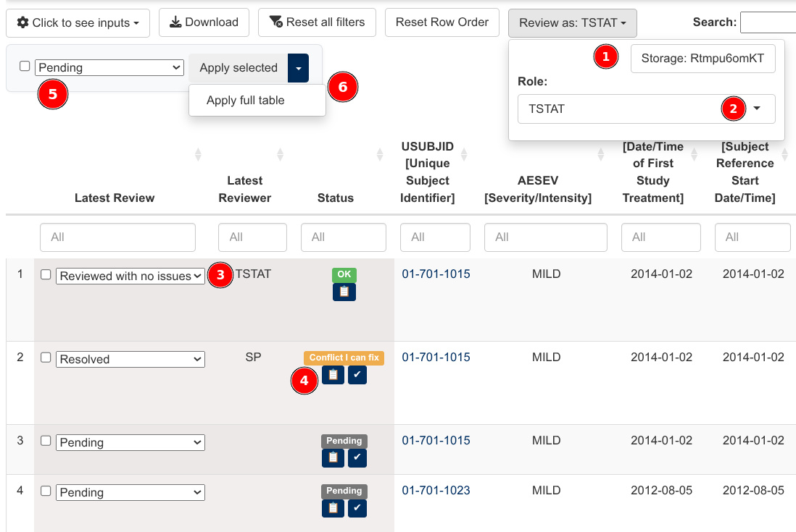

Data review (experimental feature)
data_review.RmdIntroduction
The dv.listings module provides an optional user
interface to assist data review processes. It enables a team of
reviewers to annotate each row of a given listing with a tag chosen from
a preconfigured list of options. In addition, it keeps track of changes
to the data underlying the listings to warn about possibly outdated
reviews.
Please note that this feature is still experimental and may
be subject to change. Also note that, at the moment,
only one instance of the dv.listings module can
provide this feature on any given DaVinci app.
Here’s a more detailed description of the review function:
- Users can self-select a reviewer role and, under that capacity, annotate each row of any given dataset with a value chosen from those available on a dropdown menu.
- Several users can interact under strictly non-overlapping roles with the application, each annotating individual rows of possibly overlapping datasets.
- All decisions, including conflicting ones (i.e., those differing across roles), are stored. The last decision is the one visible to all users by default.
- Rows are identified by a subset of the dataset’s columns (which we
call
identifiercolumns). That subset is dataset-specific. No two rows can share the same set of identifier values. - A subset of the columns (which we call
trackedand does not overlap theidentifiercolumns) is considered necessary and sufficient for review purposes. - Updates to the provided datasets are expected during the course of a study.
- Changes to contents of
trackedcolumns of a previously reviewed dataset row will be highlighted in the user interface and require re-confirmation. - All datasets share the same decision dropdown choices.
User interface
Structure
When properly configured, the interface of the module expands to show three extra components, as pictured below:
- A drop-down menu (top-right corner) that allows users to select:
- A location to store information derived from the review process.
- A reviewer role under which actions will be registered.
- Additional columns to the left of the listing (bottom-left corner)
to perform point-and-click reviews:
- The “latest review” column shows the most recent review provided by a member of the team and allows to change it.
- The “status” column displays possible review disagreements among the team and allows to investigate and resolve them.
- A “bulk review” menu (top-left) that allows users to:
- Select a new review decision.
- Apply it to:
- Rows individually selected through the left-most per-row checkboxes (through the “Apply selected” button).
- All rows in the output, including on subsequent pages (through the “Apply full table”). This selection is affected by the column filters.

These three review columns behave similarly to the regular listing columns, as they allow filtering and sorting. Thus, they make it easy to find which reviews are pending or to list reviews that conflict across reviewers.
Highlighting of potentially outdated reviews
As a study progresses, it is possible for data that has already been
reviewed to change. In order to bring those changes to the attention of
reviewers, dv.listings automatically highlights altered
data cells (on columns specified as tracked) that may make
previous reviews outdated.
In case there are more than four altered cells on a given row, the whole row is highlighted as outdated.
In the picture below, you can see that the “Severity” of the first adverse event has changed.
The user can isolate all reviewed, and later altered, rows by selecting “Latest Outdated” on the “Status” column. These rows will be cleared of the orange highlighting once a reviewer confirms them as still correct or re-reviews them otherwise.
Module configuration
The review feature is configured through the optional
review parameter of mod_listings. Below is an
example configuration for two hypothetical demographics
(dm) and adverse events (ae) SDTM domains:
mod_listings(
..., # all other parameters omitted for brevity
dataset_names = c("ae", "dm"),
review = list(
datasets = list(
dm = list(
id_vars = "USUBJID",
tracked_vars = c("DMDTC", "RFSTDTC", "RFENDTC")
),
ae = list(
id_vars = c("USUBJID", "AESEQ"),
tracked_vars = c(
"AETERM", "AEDECOD", "AESEV", "AESTDTC",
"AEENDTC", "AEOUT", "AEACN", "AEREL"
)
)
),
choices = c("Pending", "Action required", "Reviewed"),
roles = c("TSTAT", "SP", "Safety", "CTL"),
store_path = NULL
)
)The review parameter is itself divided into four
subfields:
-
datasets: A named list of domain configurations. The names refer to datasets with associated listings, i.e. those provided through thedataset_namesparameter. Each of the elements in that list is itself a list with two elements:-
id_vars:[character(n)]Immutable variables that uniquely identify each record for a given domain. For example, in the case of the demographics domain, the Unique SUBJect IDentifier is enough. In the case of the adverse events domain, both USUBJID and the Adverse Event SEQuence number are necessary. -
tracked_vars:[character(3+)]Variables to track across dataset updates. If the contents of one of this columns changes on an already reviewed row, that review will be marked as potentially outdated. This vector should list at least three variables.
-
choices:[character(n)]Review choices available to assign to each listing row.roles:[character(n)]Names of reviewer roles. These names can only include the following characters: alphanumerical, space, dot, underscore and dash.store_path:[character(1)]Optional. If specified, files associated to the review process will be stored on this path on the server. If left unspecified, those files will be stored on a folder of the client’s computer. The users of the app will have the opportunity to choose the path when they launch it.
Storage of review-related files
The review of datasets that evolve over the course of a clinical trial requires some form of storage that is:
- Shared among the members of the team conducting the review.
- Stable throughout the duration of the trial.
The natural location for this storage would be on a folder of the
server that hosts the review application. However, some Shiny execution
environments lack permanent server storage. In such cases, the module
offers the possibility of storing review information on the client side
if the store_path field of the review
parameter is left unspecified.
Client side storage
Recent versions of Google Chrome and browsers derived from it (Edge, etc.) offer experimental support for javascript code to read and write to the client file system as native apps do. This module takes advantage of this File System Access API to compensate for the potential lack of server storage.
In practical terms, relying on this feature means that every time users access a review app, their browser will prompt them to ask for permission to read and write to a folder allocated specifically for review purposes.
In the case of reviews conducted by a team of reviewers, the team as a whole will have to decide beforehand which networked folder (shared through NFS, Google Drive, Microsoft OneDrive, Dropbox, …) to use in order to collaborate for the duration of the study.
We recommend that users participating in multiple studies set up an independent folder for each of them.
Data Stability Requirements
The module only has access to the latest version of any given dataset. In order to inform users about modified and newly added records, it relies on stored summary hashes of previously seen data. Thus, it’s necessary that some aspects of the representation of data are kept constant over the life of a study. These are:
- All rows of each provided dataset are identified uniquely by the
combination of
id_varsconfigured at the beginning of the study. - Identifying variables (defined through
id_vars) and tracked variables (defined throughtracked_vars) have to remain the same for the duration of the study. - Identifying and tracked variables retain their types (factor, numeric, …) and are available on each revision of each dataset.
Implementation details
This final section documents the design principles and the structure
of the review-related files that dv.listings creates. It
can be safely skipped for regular use of the review feature. However it
may prove useful in the following scenarios:
- For future
dv.listingsdevelopers/maintainers, to know the reasoning behind some unusual design decisions. - For app creators and users, to know how to backup and migrate review data.
- For app users, to know how to read and explore review data outside the limitations of the module.
The file formats used for the review portion of
dv.listings are still a work in progress, but our goal is
to document them thoroughly enough for external tools to parse them or
even produce them. This should allow third-parties to address specific
user needs without cluttering the dv.listings module with
infrequently used (but still useful) functionality.
Storage design considerations
The nature of the review feature requires concurrent multi-user (multi-session, multi-process) write access to a shared resource, which Posit deems incompatible with pins (https://docs.posit.co/connect/user/pins/, see reddish box).
This is the first DaVinci module that stores permanently a
substantial amount of study decisions taken over an extended period of
time. Loss of data in this context is not acceptable. To guarantee data
integrity, we propose the use of simple append-only data
structures. Those are stored as plain files opened in “append” mode.
It’s easy to demonstrate that they can’t become the source of
catastrophic loss of data of past review sessions. The granularity of
the pins API (which only allows to load and store complete
files) is incompatible with this design.
Data appending improves performance, as only new changes need to be serialized. It’s also useful for version tracking, as all editing operations can be replayed in the order in which they happened.
Backing up review data can be accomplished by copying the contents of
the container folder to an independent file system. Since all review
operations are appended, a delta-transmission tool such as
rsync is a natural fit.
Lastly, using plain file storage allows for easy local testing and for universal use of the review feature (running the application locally, on Connect, on Openshift, …).
Structure of stored files
If we take a hypothetical “xyz” domain, dv.listings will
store the following files for review purposes (expand to see the layout
of their contents):
xyz_000.base (information related to the first version of
the “xyz” domain dataset seen by the module)
- 1 file magic code (“LISTBASE”)
- 1 format version number (0)
- 1 generation marker (0)
- 1 timestamp of creation date+time (UTC)
- 1 complete hash of the “xyz” data.frame
- 1 domain string (“xyz”)
- n
id_varsvariable names - n
id_varsvariable types (see “Variable type encoding” below) - m
tracked_varsvariable names - m
tracked_varsvariable types (see “Variable type encoding” below) - 1 row count
- p (1 per “xyz” row)
hash_id(xyz[id_vars]) - p (1 per “xyz” row, 2*m bytes long)
hash_tracked(xyz[tracked_vars])
xyz_001.delta (one per domain dataset update)
- 1 file magic code (“LISTDELT”)
- 1 format version number (0)
- 1 generation marker (1). Wraps around to 0 after 255 (e.g. for
xyz_256.delta) - 1 timestamp delta (seconds elapsed since “base” timestamp)
- 1 complete hash of new “xyz” data.frame
- 1 domain string (“xyz”)
- 1 count of new rows
- n (1 per new “xyz” row)
hash_id(xyz[id_vars]) - n (1 per new “xyz” row, 2*m bytes long)
hash_tracked(xyz[tracked_vars]) - 1 count of modified rows
- p (1 per modified “xyz” row) row index
- p (1 per modified “xyz” row, 2*m bytes long)
hash_tracked(xyz[tracked_vars])
xyz_<ROLE>.review (one per domain and ROLE)
- 1 file magic code (“LISTREVI”)
- 1 format version number (0)
- 1 role string
- 1 domain string (“xyz”)
- n reviews: row index +
review_index+ delta timestamp
review.codes (one per app):
- 1 file magic code (“LISTCODE”)
- 1 format version number (0)
- n review texts
(Row indices refer to indices in the stored base+delta matrix, which is append-only. These canonical indices are as good as identifiers).
The dominant factor governing the size of these files is the length
of a hash, which is 16 bytes in the case of hash_id and 2*m
bytes (m being the number of tracked columns) in the case of
hash_tracked, as we discuss in the “Hashing” session below.
Row indices and delta timestamps can be encoded in 4 bytes. Review
indices take up 1 byte each. Estimating an upper bound of 1 million rows
per dataset, a .base file tracking 8 variables would take
around 32 MiB. A comprehensive .review file for such a
dataset would take around 9 MiB.
These file structures are designed so that they start with a short heterogeneous header that reiterates the information that can be gleaned from the file name. The rest of the records are all homogeneous and of known size. That allows to load them into memory without the need for expensive parsing.
These files won’t benefit much from compression since their main content (the hashes) is by construction statistically indistinguishable from noise.
Variable type encoding
The two “variable type” .base fields are encoded as
single bytes that take the following values:
- Date: 1
- POSIXct: 2
- POSIXlt: 3
- Logical: 10
- Factor: 11
- Integer: 13
- Numeric: 14
- Complex: 15
- Character: 16
- Raw: 24
Most of these values are taken from the base R SEXPTYPE
enum definition (see src/include/Rinternals.h on any recent
R source distribution).
The values assigned to time types are arbitrary, because they are S3
objects and thus lack dedicated SEXPTYPE values.
factor() variable is not fully defined by it
being tagged as such, since the levels and their internal encoding is
also part of the type. For purposes of hashing, the review feature of
dv.listings treats the content of factor columns as
character() by mapping their value to their assign
string-like representation. This feature also is indifferent to a factor
being ordered.
Hashing strategy
We store hashes for the values of id_vars and
tracked_vars dataset columns. These hashes serve as content
IDs.
Choice of hash function
A popular choice for non-cryptographic hashing is the
xxh family of function (https://github.com/Cyan4973/xxHash/tree/dev?tab=readme-ov-file#xxhash---extremely-fast-hash-algorithm)
for its balance of speed and perceived hash quality. Three independent R
packages implement them:
- rlang: Provides no control over serialization, so hashes are potentially not stable across R versions.
- digest: Maintained by Dirk Eddelbuettel, known for being a stickler for backwards compatibility. Provides serialization options.
- xxhashlite: Substantially faster than the other two implementations for small input sizes (our scenario). Provides serialization options.
It makes sense to use the fastest implementation available, as it
respects the time of users and requires less energy.
xxhashlite is then the clear winner, but migration to
digest (or “vendoring” of xxhashlite inside
this package) is always possible if this lesser-known package is somehow
retired from CRAN.
Hashing of ID variables (hash_id())
With a perfect hash function, we would expect a collision after
2^(n/2) entries have been hashed, where n is
the output length in bits of the chosen hash. A hash that produces 64
bits is not strong enough as 2^32 is a large quantity of hashes, but
still bound to collide if the review feature is used long enough.
We opt instead for 128 bits, which makes the possibility of a collision extremely unlikely. We expect an upper bound of one million rows per dataset, which is 13 orders of magnitude lower than the mean amount of entries estimated necessary to get a collision. The chosen hash won’t be perfect, but we have an ample safety margin. We also assume that data has not been created through adversarial means geared towards making hash collisions more likely.
Hashing of tracked variables (hash_tracked())
We could apply the same reasoning behind the choice of the
hash_id() function to the hashing of the variable parts of
each row. We instead propose a more complex hashing scheme to provide
partial information about which variables of a row have been
altered when its hash changes.
Each hash value is 2*m bytes long, where m is the number of
variables tracked of a given dataset. Each of those bytes is an
independent hash of three of the tracked variables of a dataset row.
Each variable, in turn, contributes to three of the 2*m byte-sized
hashes. This mixing of variables makes it harder for an external
adversarial observer of the .base and .delta
files to brute-force the original values of the dataset by looking for
collisions with the computed hash values.
To compute which variables contribute to which hash byte pair, we use the following scheme:
- Byte pair n: Variables (n+0)%n, (n+2)%n and (n+3)%n
Where % indicates the remainder of the integer
division.
So, for a input dataset with seven tracked variables (zero through six), this would mean:
- Byte pair 0: Variables 0, 2 and 3
- Byte pair 1: Variables 1, 3 and 4
- Byte pair 2: Variables 2, 4 and 5
- Byte pair 3: Variables 3, 5 and 6
- Byte pair 4: Variables 4, 6 and 0
- Byte pair 5: Variables 5, 0 and 1
- Byte pair 6: Variables 6, 1 and 2
This scheme creates unique mixtures of variables. Take, for instance, variable 0. It is combined with variables 2 and 3 on the zeroth byte pair, with variables 4 and 6 on the fourth byte pair and with 1 and 5 for the fifth byte pair.
Each of these byte pairs is computed by:
- Taking the three values to hash.
- Serializing them to text and concatenating them using the non-ASCII
byte separator
1D(also known as “group separator”). - Computing the
xxh32hash and returning its two most significant bytes.
Informal testing (refer to
tests/testthat/tests-hash_tracked.R for more details) of
this hashing scheme shows the following properties:
- It’s capable of identifying up to four modified variables per row (after that, it’s preferable to give up and notify the whole row as modified).
- It has a very low false negative rate (a variable is modified without it being notified as such).
- It has a low false positive rate (a variable that retains its value is notified as modified). This only happens when there are actual changes to a row.
False positives are not critical, as they ask reviewers to consider a larger set of variables when re-reviewing a row that has been altered.
False negatives are critical, since they allow changes to go unreported to reviewers. This is why our choice of hash favors false positives over false negatives.
This composite hash function is a compromise found through heuristic
exploration. If we come up with a better option, we can version it
through the “format version number” present in .base and
.delta files. This means that neither app creator nor app
users have to concern themselves about the underlying
hash_tracked representation.